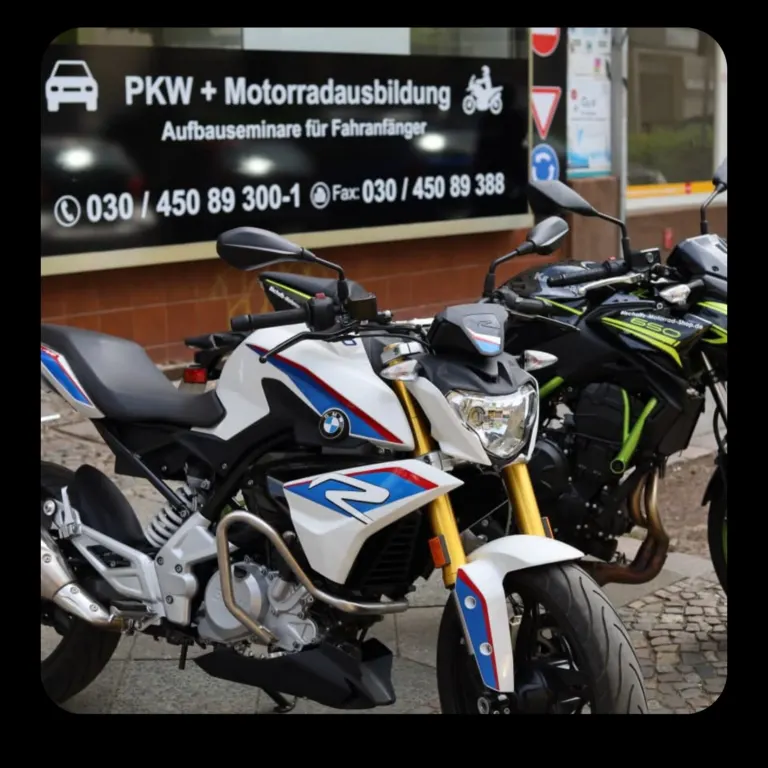

Ausbildung
Welcher Weg passt zu Dir?
Die wichtigsten Unterschiede und Abläufe kurz erklärt. Im persönlichen Gespräch klären wir Deine Voraussetzungen und Unterlagen.
PKW
Klasse B
Für Kraftfahrzeuge bis 3.500 kg mit höchstens acht Sitzplätzen zusätzlich zum Fahrersitz.
So läuft die Ausbildung ab
- Anmeldung & AntragPersonalausweis; bei nichtdeutschen Staatsbürgern Reisepass mit Meldebestätigung; Sehtest; Erste-Hilfe-Nachweis. Unter 18-Jährige kommen mit einem Elternteil.
- Theorie12 Grundstoff- und 2 klassenspezifische Themen; Lern-App kann in der Fahrschule erworben werden.
- TheorieprüfungVorher sind Vortests in ruhiger Umgebung in der Fahrschule möglich.
- GrundausbildungVerkehrsverhalten, Parken, Umkehren und weitere Grundfahraufgaben.
- Sonderfahrten180 Min. Autobahn, 225 Min. Überland, 135 Min. Nachtfahrt.
- PraxisprüfungAuf der bestehenden Website mit 55 Minuten angegeben.
Automatik + Schaltung
B197
Du kannst die praktische Prüfung mit einem Automatikfahrzeug ablegen und danach trotzdem Schaltwagen fahren.
Was dafür nötig ist
- 10Schaltstunden
Mindestens 10 Fahrstunden zu je 45 Minuten auf einem Schaltwagen.
- 15Minuten Testfahrt
Mit einem Fahrlehrer, je zur Hälfte innerorts und außerorts.
- 197Keine Automatikbeschränkung
Die Fahrschule stellt die Bescheinigung aus; Schlüsselzahl 197 ersetzt 78.
Die Schaltstunden dürfen laut Ausgangsseite frühestens nach der praktischen Grundausbildung erfolgen.
Klasse A / A2
Motorradausbildung
Theorie und Praxis mit besonderem Fokus auf Fahrtechnik, Sicherheit und Grundfahraufgaben.

Das solltest Du wissen
- 12 Grundstoff- und 4 klassenspezifische Theoriethemen ohne Vorbesitz
- Bei Klasse B als Vorbesitz: 6 Grundstoff- und 4 Zusatzthemen
- Eigene vollständige Schutzkleidung ist für Praxisstunden erforderlich
- Sonderfahrten: 180 Min. Autobahn, 225 Min. Überland, 135 Min. Nachtfahrt
- Praxisprüfung laut Ausgangsseite: 60 Minuten
Bei zweijährigem Vorbesitz der jeweiligen Motorradklasse nennt die Ausgangsseite eine Aufstiegsprüfung ohne Theorieprüfung und praktische Pflichtausbildung.
Probezeit
Aufbauseminar für Fahranfänger
Das ASF wird von der Führerscheinbehörde nach bestimmten Verkehrsverstößen angeordnet.
Ein besonderes Aufbauseminar nach Alkohol- oder Drogenverstößen ist davon zu unterscheiden. Die bestehende Website beschreibt hier ausdrücklich das reguläre ASF.
Kurz beantwortet
Häufige Fragen
Ist die Anfrage schon eine Anmeldung?
Nein. Über das Formular sendest Du zunächst eine Beratungsanfrage. Für die Anmeldung bittet die Fahrschule laut bestehender Website um einen persönlichen Besuch mit den erforderlichen Unterlagen.
Welche Unterlagen brauche ich für Klasse B?
Personalausweis; bei nichtdeutschen Staatsbürgern Reisepass mit Meldebestätigung; Sehtest und Erste-Hilfe-Nachweis. Unter 18-Jährige sollen von einem Elternteil begleitet werden.
Was ist der Hauptunterschied zwischen B und B197?
Bei B197 kann die praktische Prüfung auf Automatik stattfinden. Mit den vorgeschriebenen Schaltstunden und der Testfahrt darfst Du danach auch Schaltwagen fahren.
Welche Schutzkleidung brauche ich fürs Motorrad?
Helm, Motorradjacke und Motorradhose mit Protektoren, Motorradhandschuhe und Motorradschuhe. Ohne Schutzkleidung findet laut Fahrschule keine praktische Stunde statt.
Nächster Schritt